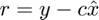
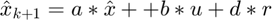

DETECTIONFILTER Builds and updates a linear detection filter.
Contents
Forms
d = DetectionFilter( 'initialize', d, tau, dT ) d = DetectionFilter( 'update', u, y, d ) d = DetectionFilter( 'reset', d )
Description
The detection filter gain matrix d is designed during the initialize action. The continuous matrices are then discretized using the internal function CToDZOH. The esimated state and residual vectors are initialized to the size dictated by a. During the update action, the residuals and new estimated state are calculated and stored in the data structure d.
The residuals calculation is

The estimated state calculated with the detection filter gains is

Inputs
action (1,:) 'initialize' or 'update' d (.) Data structure .a (:,:) State space continuous a matrix .b (:,1) State space continuous b matrix .c (:,:) State space continuous c matrix tau (:,1) Vector of time constants dT (1,1) Time step u (:,1) Actuation input y (:,1) Measurement vector
Outputs
d (.) Updated data structure .a (:,:) State space discrete a matrix .b (:,1) State space discrete b matrix .c (:,:) State space discrete c matrix .d (:,:) Detection filter gain matrix .x (:,1) Estimated states .r (:,1) Residual vector
See also
DetectionFilter>CToDZOH
DetectionFilter>CToDZOH Create a discrete time system using a zero order hold.
Utilizes expm for the discretization.
[f, g] = CToDZOH( a, b, T )
Copyright
Copyright (c) 2019, 2022 Princeton Satellite Systems, Inc. All rights reserved.